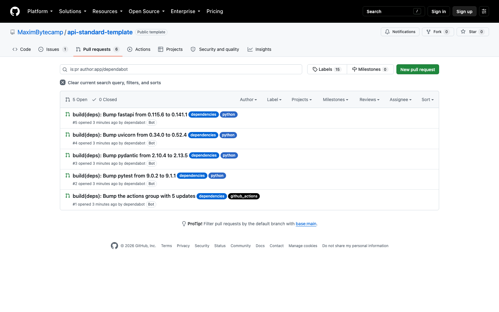
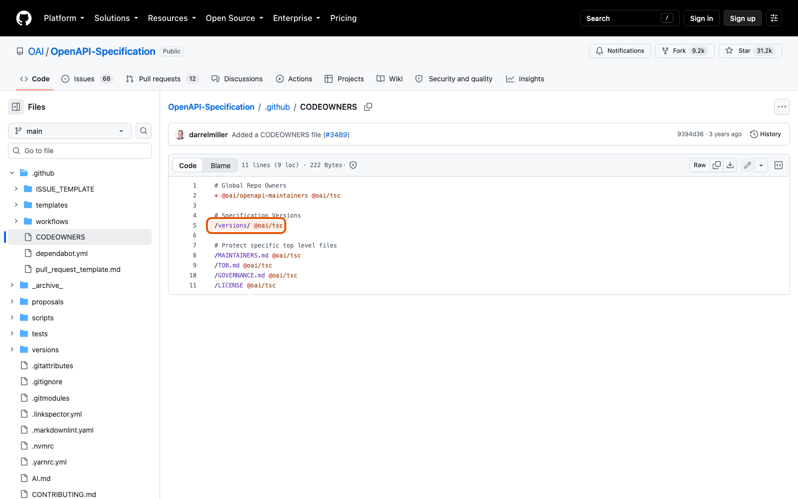
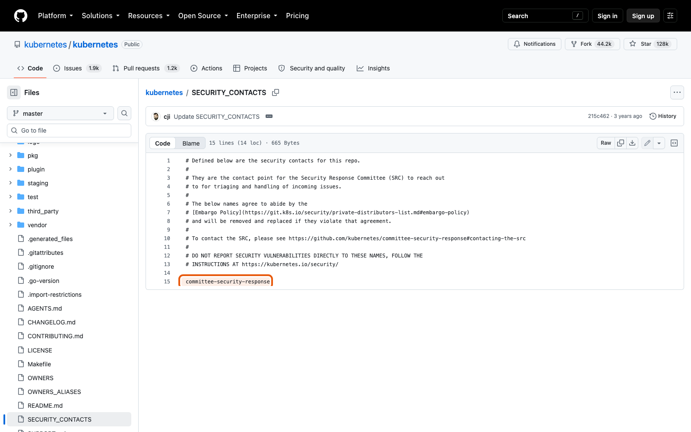

Справочник «Стандартизация HTTP API» · модуль 7 · Репозиторий API
Глава 7.2
Владельцы кода
и безопасность
У публичного контракта должен быть владелец — иначе его меняет тот, кто первым добрался. И должен быть безопасный способ сообщить о найденной дыре — иначе о ней узнают все одновременно. Обе задачи решаются небольшими файлами в папке репозитория.
- Категория
- Репозиторий
- Уровень
- Базовый
- Связанные главы
- 7.1 Шаблон PR · 6.4 CI · 4.1 Problem Details
- Зачем это знать
- Чтобы контракт нельзя было изменить втихую, а об уязвимости сообщили вам, а не миру
§1CODEOWNERS: кто отвечает за контракт
Файл .github/CODEOWNERS сопоставляет пути в репозитории с людьми или группами. Тот, кто указан владельцем, автоматически получает запрос на просмотр изменения, если правки затронули его файлы.
# В учебном репозитории владелец один. В команде вместо имени пишут группу # ревьюеров API, например @org/api-reviewers. * @MaximBytecamp # Публичный контракт и правила его проверки /openapi/ @MaximBytecamp /.spectral.yaml @MaximBytecamp /docs/API_STYLE_GUIDE.md @MaximBytecamp /docs/VERSIONING.md @MaximBytecamp /docs/adr/ @MaximBytecamp
В связке с защитой ветки из главы 6.4 это даёт нужное свойство: изменение файла описания невозможно объединить без одобрения владельца контракта. Не «желательно показать» — технически невозможно.
§2Как читается файл
* — владелец по умолчанию для всего репозитория. Страховка на случай, если файл не попал ни в одно частное правило.по умолчанию@org/api-reviewers — запрос уйдёт группе, и ответить сможет любой её участник.в командеЭто главная причина неработающих CODEOWNERS. Если строку * поставить в конец файла, она перекроет все частные правила, и владельцем всего окажется один человек. Проверить легко: откройте изменение, затрагивающее /openapi/, и посмотрите, кого GitHub назначил ревьюером.
§3Что назначают владельцу API
В перечень путей включены файлы, изменение которых меняет обещания клиентам или правила их проверки.
| Путь | Что там | Почему нужен владелец |
|---|---|---|
/openapi/ | Выгруженное описание контракта | Любая правка здесь видна клиентам |
/.spectral.yaml | Правила проверки описания | Ослабление правила = тихое ослабление стандарта |
/docs/API_STYLE_GUIDE.md | Сам стандарт | Меняются договорённости всей команды |
/docs/VERSIONING.md | Политика совместимости | Определяет, что считать поломкой |
/docs/adr/ | Записи решений | Решение не пересматривают в одиночку |
Обратите внимание на вторую строку. Файл с правилами линтера охраняется наравне с описанием: смягчив правило, можно провести изменение, которое до этого не проходило.
§4SECURITY.md: как сообщить об уязвимости
Второй файл отвечает на вопрос, который однажды возникнет у внешнего человека: «я нашёл дыру, куда писать?»
## Поддерживаемые версии | Версия | Поддерживается | |---|---| | 1.1.x | да | | 1.0.x | нет, обновитесь до 1.1 | ## Сообщить об уязвимости Не публикуйте уязвимость в issue. Используйте приватное сообщение об уязвимости на GitHub или напишите API Team: api-team@example.edu. Укажите, насколько сможете: - операцию и версию API; - шаги воспроизведения; - X-Request-Id из ответа; - чем уязвимость опасна. Мы ответим в течение трёх рабочих дней.
X-Request-Id из главы 4.2: он приведёт разбирающегося прямо к нужной записи в журнале.что приложить§5Почему не через обычный issue
Issue публичен с первой секунды. Сообщение об уязвимости в нём — это объявление для всех, включая тех, кто воспользуется ею раньше, чем вы успеете починить.
Уязвимость известна всем одновременно: и вам, и тем, кто её применит. Времени на исправление нет.
Видят только владельцы репозитория. Есть время выпустить исправление и лишь потом рассказать.
Чтобы путь не выбирался наугад, в проекте настроен файл .github/ISSUE_TEMPLATE/config.yml: он убирает возможность создать issue без формы и добавляет в список ссылку на приватное сообщение об уязвимости. Человек, пришедший с находкой, видит правильный вариант в самом начале — а не после того, как нажмёт «создать».
§6Что не должно утекать через API
Часть безопасности контракта относится не к репозиторию, а к самим ответам. Соберём то, что уже встречалось в предыдущих модулях.
| Опасность | Как проявляется | Где разбиралось |
|---|---|---|
Трассировка в теле 500 | Клиент видит имена таблиц, путь к файлам, внутренние сервисы | глава 4.1 |
| Сообщение СУБД в ошибке | По тексту видно, что такая запись существует | глава 4.1 |
401 вместо 403 и наоборот | Подсказывает, существует ли учётная запись | глава 4.2 |
Чужой X-Request-Id без проверки | В журнал попадает произвольная строка клиента | глава 4.3 |
| Слишком широкий CORS | Любая страница может обращаться к API от имени пользователя | глава 4.3 |
| Отсутствие ограничения частоты | Перебор паролей и выгрузка данных ничем не сдержаны | глава 4.3 |
Все шесть пунктов проверяются тестами или настройкой, и все шесть — часть контракта, а не отдельная «работа по безопасности», которую делают потом.
§7Dependabot: обновление зависимостей
Третий файл — .github/dependabot.yml. Он еженедельно проверяет версии библиотек и действий сборки и сам открывает изменения с обновлениями.
version: 2
updates:
- package-ecosystem: pip
directory: "/"
schedule:
interval: weekly
- package-ecosystem: github-actions
directory: "/"
schedule:
interval: weekly
groups:
actions:
patterns: ["*"]Здесь важна связь с главой 6.4. Мы закрепили версии всех инструментов, чтобы сборка не ломалась сама. Но закреплённая версия со временем устаревает, в том числе по части безопасности. Dependabot — ответ на это противоречие: версии закреплены, а их обновление — отдельное видимое изменение, которое проходит все проверки контракта.

Настройка groups для действий собирает их обновления в одно изменение вместо пяти — иначе мелкие правки приходят по нескольку в неделю и их перестают разбирать.
§8Как делают другие


Сравнив три файла в учебном проекте с их же вариантами у Kubernetes, Azure и OpenAPI Initiative, легко заметить закономерность: чем крупнее проект, тем подробнее файлы, но состав разделов совпадает. Это и делает их пригодными за образец.
§9Частые ошибки
* в конце CODEOWNERSПобеждает последнее совпадение, поэтому общее правило перекроет все частные.§10Проверьте себя
- Что делает
CODEOWNERSи почему без защиты ветки он почти бесполезен? - Почему строка
*должна стоять в начале файла, а не в конце? - Почему в список охраняемых путей входит
.spectral.yaml, а не только описание API? - Назовите четыре части
SECURITY.mdи объясните, зачем нужен срок ответа. - Чем плох публичный issue как канал сообщения об уязвимости?
- Как уживаются требование закреплять версии инструментов и необходимость их обновлять?
путь → владелецпобеждает последнее правило* в начале файлав команде — группа/openapi/.spectral.yamlAPI_STYLE_GUIDE.mdVERSIONING.md/docs/adr/поддерживаемые версииприватный каналчто приложитьсрок ответаверсии закрепленыDependabot обновляетобновление проходит CIСправочник «Стандартизация HTTP API» · модуль 7 · глава 7.2Макаров Максим Николаевич